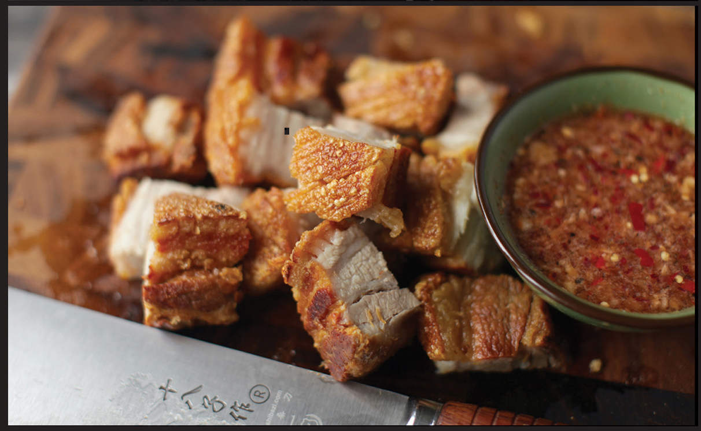

CRISPY FRIED PORK BELLY

|
Yield Serves 6 |
Active Time 30 minutes Total Time 2 hours |
Look for rind-on pork belly with a relatively even ratio of fat to lean. Sometimes pork belly has hair or discoloration on its rind. If your pork belly looks anything but pristine, I would suggest passing a blowtorch briefly across its surface, then scraping it firmly with a knife to clean it.
INGREDIENTS
One 2-pound (900 g) slab rind-on pork belly
2 tablespoons (30 ml) distilled white vinegar
1 tablespoon (8 g) whole black peppercorns
3 dried bay leaves
1 head garlic, split in half horizontally
3 tablespoons (35 g) kosher salt
½ teaspoon (2 g) baking soda
2 quarts (2 l) peanut, rice bran, or other neutral oil
To Serve:
Sukang Sawsawan (Philippine Chile-Vinegar Dipping Sauce, here) or Nam Pla Prik (here) for serving
DIRECTIONS
1 Place the pork belly in a wok, rind side up. Cover with water, then add the vinegar, peppercorns, bay leaves, garlic, and 2 tablespoons (20 g) of the salt. Bring to a boil, reduce to a bare simmer, cover, and cook for 1 hour. Transfer the pork belly to a cutting board and allow it to rest until cool enough to handle. Discard the water and aromatics.
2 Place an oven rack in the center position and preheat the oven to 375°F (190°C). Using a fork, a handful of metal or bamboo skewers, or a metal jaccard, poke holes all over the surface of the rind, being careful to pierce only the very surface of the rind (do not pierce the meat underneath). You can also use a very sharp knife to thinly score the rind at ¼-inch intervals.
3 Combine the remaining tablespoon (10 g) salt and the baking soda, then rub it all over the pork belly, using your palms to really rub it in. Place the pork belly on a rack set in a rimmed baking sheet and let it rest for 15 minutes. Transfer to the oven and roast until the surface of the pork is very dry, about 25 minutes. Remove the pork from the oven and allow to cool for 15 minutes.
4 Heat the oil in the wok over medium heat until it registers 325°F (160°C) on an instant-read thermometer. Using tongs and a wide wok spatula, carefully lower the pork belly into the oil, skin side up (the skin should be emerging from the oil). Use the spatula to splash hot oil over the top of the pork belly. You should immediately start to see the skin puffing and blistering. Continue basting the hot oil over the skin until no new bubbles form and the skin starts to crisp a bit, about 3 minutes.
5 Carefully flip the pork belly skin side down, being careful not to splash the hot oil. Increase the heat to high and cook, moving the pork belly around and splashing it with hot oil until deeply golden brown and crispy on all sides, 3 to 4 more minutes.
6 Transfer the pork belly back to the wire rack set in a rimmed baking sheet, skin side up, and allow it to cool slightly. Use a sharp knife or cleaver to cut the pork belly into thick slices, then cut the slices into bite-sized chunks. Serve immediately with Sukang Sawsawan or Nam Pla Prik.